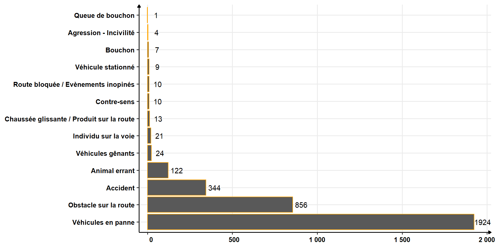

MCE District Nantes
Bilan année 2024
Évènements
Proportion type d’évènements
Patrouille
Proportion évènements Patrouille
Quantités évènements Patrouille
Proportion Patrouille par CEI
Évènements Patrouille par CEI
Interventions
Proportion évènements Intervention
Quantités évènements Intervention

Évènements Intervention par horaire
Évènements Intervention par jour
Proportion Intervention par CEI
Évènements Intervention par CEI
Focus Accidents
Accidents - Gravité
Répartition Accidents - Gravité
Répartition accidents par CEI
Répartition accidents par mois
Répartition accidents par jour
Quantité accident par axe
Quantité accident par échangeur
(> 2)
Collision faune
Proportion animaux Collision faune
Quantités animaux Collision faune
Répartition animaux par CEI
Répartition animaux par mois
Focus gros gibier par mois
Focus gros gibier par jour
Focus gros gibier par CEI